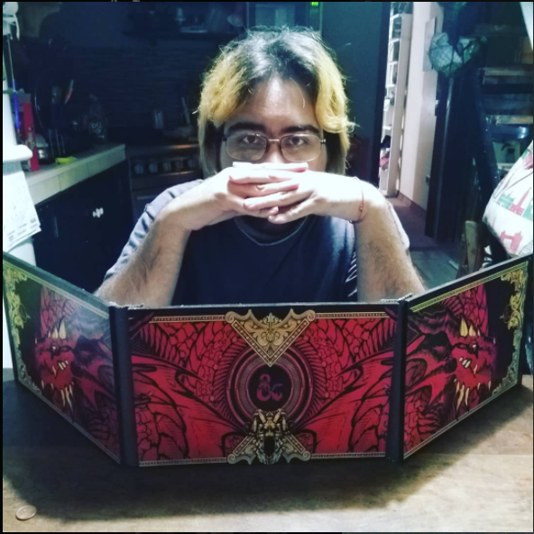

Somos un grupo de inadaptados sociales, conflictivos que se la pasan haciendo memes de la vida y explotando juegos hasta que su gracia termina.
¿Que es Post Mortem Crew?
Caos, somos y no somos el caos. Algunas personas nos nombran como "El lugar", el dominio es cuestion de tiempo. En este lugar vas a ser recibido, sea como seas, todos pasan por las mismas desgracias no hacemos distinciones, bienvenido al principio del fin. We are the tangananica and the tanganana.
MR SOULSTER
 Soulster La cabeza del grupo, mandatario/dictador, la pareja de la jefa. El es el hombre del traje, no solo tiene cara de loco si no, que esta loco, puede utilizar armas de fuego, armas de mano. *baterias y monster no incluidas*CAMIX3
 La jefa, la pareja del dictador y la soporte del grupo.
Esta individua es la que mantiene cuerdo a Soulster, sin ella todos estarían destrozados por el loco, ademas de esto fue la mama de todos un tiempo.
*mates y yerbas por separado*
La jefa, la pareja del dictador y la soporte del grupo.
Esta individua es la que mantiene cuerdo a Soulster, sin ella todos estarían destrozados por el loco, ademas de esto fue la mama de todos un tiempo.
*mates y yerbas por separado*